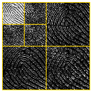

The WaveleWare Software Package
WaveletWare is a collection (package/toolbox) of functions written to supplement the books Wavelet Theory: An Elementary Approach with Applications by David K. Ruch and Patrick J. Van Fleet and Discrete Wavelet Transformations: An Elementary Approach with Applications, 2nd Edition by Patrick J. Van Fleet both by John J Wiley & Sons, ©2008, by Patrick J. Van Fleet. The WaveletWare package/toolbox is a replacement and an upgrade of the DiscreteWavelets package/toolbox that accompanied the first edition of Discrete Wavelet Transformations: An Elementary Approach with Applications.
The package is available in Mathematica (version 10.0 or later) and the toolbox is available in MATLAB (R2018a or later).
Features
The package/toolbox contains 127 (Mathematica) or 129 (MATLAB) fully-documented functions that implement virtually all topics and applications covered in the companion textbooks. The major features are listed below:- Filters: Built-in filters include the Haar filter, Daubechies family of orthogonal filters, Coiflet filters, biorthogonal spline filter pairs, the LeGall filter and the CDF97 biorthogonal filter pair.
- Transformations: The package contains routines to perform one- and two-dimensional orthogonal, biorthogonal (can exploit the symmetry of the filter pairs), wavelet packets, LeGall and one-sided transformations.
- Visualization: One- and two-dimensional plots of (biorthogona) wavelet transforms and wavelet packet transforms of signals and images. The routines are tailored to match the theory and applications in the accompanying books.
- Applications: The package contains routines that can be used to perform naive image compression, the FBI Wavelet Scalar Quantization specification, JPEG2000, edge detection, image pansharpening, signal de-noising.
- Image Processing: The package contains routines for color space conversions (RGB, YCbCr, HSI) and basic image processing routines such as gamma correction, histogram equalization, histogram matching and image resizing.
- Continuous Analysis: For those familiar with the material in Wavelet Theory: An Elementary Approach with Applications, the package contains routines for constructing (via the cascade algorithm) and plotting scaling functions, wavelet functions and wavelet packet functions.
- Tutorials: Tutorials are available on topics such as computing and plotting wavelet (packet) transformations, different data structures in the package, managing multimedia files, naive image compression and edge detection and the FBI WSQ specification.
Download and installation instructions appear below:
Mathematica (v10.0 or higher)
- Click here to download WaveletWare for Mathematica.
- Open Mathematica and execute the command: $Path.
- Unzip the zip file from the first step into any of the folders from the second step for which you have read/write privileges.
- In Mathematica execute the command <<WaveletWare` (take care to get the grave accent, not the apostrophe when typing this command)
- If you see no error messages after issuing the above command, chances are the installation was successful. To double- check, execute the command ?Haar. If the installation worked, you should see a message that says
Haar[] returns the Haar lowpass filter >>.
MATLAB (R2018a or later)
- Click here to download WaveletWare for MATLAB.
- Extract the file WaveletWare.mltbx from the zip file and launch it. MATLAB will open and the toolbox will self- extract.
- The path should be automatically set by the installer. If this not the case, make sure the WaveletWare folder and subfolders are in your MATLAB path.
- Help files, guides and tutorials for WaveletWare are fully integrated into MATLAB documentation. The quickest way to access these files is to type WaveletWare in the documentation search box.
Installation Notes
- It is not a good idea to install WaveletWare more than once on your computer. The new version allows for easy addition of multimedia files and if you have two or more installations and only add multimedia files to one of them, there is a chance WaveletWare won't find them.
- Help files, guides and tutorials for WaveletWare are fully integrated into Mathematica/MATLAB documentation. The quickest way to access these files is to click type WaveletWare or a particular function in the documentation search box.